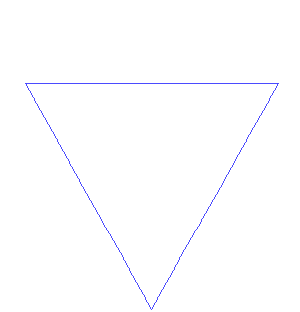

Exploiting Search Space Structure in Classical Planning: Analyses and Algorithms (DC talk)
15 min + 5 min question
POSTER 4ft (122cm) wide x 6ft (183 cm) tall
Masataro Asai
2nd year in Ph.D program (2 years to go)
University of Tokyo
Short talk (15min)
1 Overview
- What I've been doing (5 min)
- primarily in classical planning
- Briefly summarize 3 papers
- How to form a clean thesis & what I'm insterested in (10 min)
- To construct a consistent story →
- Theory unifying all satisficing heuristic search
- 4th paper : aiming to be a non ad-hoc macro paper
2
Prior Work
3 CELL-ASSEMBLY system
Asai, M.; Fukunaga, A: 2014. Fully Automated Cyclic Planning for Large-Scale Manufacturing Domains. In ICAPS2014.

3.1 Issues addressed

4 ICAPS15 paper
In this work, we generalized the proposed method by detecting and categorizing the logical structure which forms each loop. For example, programs do not know that cars consists of several parts such as doors, engines and tires.

Asai, M.; Fukunaga, A: 2015. Solving Large-Scale Planning Problems by Decomposition and Macro Generation. In ICAPS2015.
5 AAAI16 paper (visit my 2nd poster session)

Asai, M.; Fukunaga, A: 2016. Tiebreaking Strategies for A* Search: How to Explore the Final Frontier. In AAAI-2016.
5.1 AAAI16 paper (visit my 2nd poster session)

Asai, M.; Fukunaga, A: 2016. Tiebreaking Strategies for A* Search: How to Explore the Final Frontier. In AAAI-2016.
5.2 Investigating h-tiebreaking in A*

5.3 Investigating h-tiebreaking in A*

5.4 Investigating h-tiebreaking in A*

5.5 Investigating h + LIFO/FIFO tiebreaking in A*

5.6 Investigating h + LIFO/FIFO tiebreaking in A*

5.7 A* with h + Depth Diversification

annd "plateau search = satisficing planning"
6
Future Work
7 Earmuffs Required
Future Work
== Research IDEAs : not yet fully developped
8 Toward Thesis Proposals
1st, 2nd paper: Macros, satisficing search
3rd paper: A*, tiebreaking, plateau, optimising search
→ Weak connections between the topics
Requires a unified story
- (macro ∩ plateau analysis) == search space
9 A* tiebreaking [RD RO] paper was about search space
10 Macro operators changes the search space structure

11 Macro operators changes the search space structure

12 Proposal: Unifying Framework for Analyzing Search Space

13 Proposal: Unifying Framework for Analyzing Search Space

14 Proposal: Unifying Framework for Analyzing Search Space

15
Percolation Theory
15.1 Example: Percolation in 2-dimentional grids
A node is either occupied or unoccupied

- Key interst: when/how a graph percolates?
15.2 Bond (edge) / Site (node) percolation

15.3 Percolation described by occupation ratio r

15.4 Percolation described by occupation ratio r

15.5 Percolation described by occupation ratio r

15.6 Percolation described by occupation ratio r
Generates a connected cluster with complex shape

15.7 Phase Transition

15.8 Macros may be shifting the ratio to the right

15.9 Forward Search : Increasing r as the search progresses

15.10 Open Questions
- Prove the connection between macro-operators and critical value
- I am testing if randomly generated Junk Macros improve the performance
- Ongoing work — positive results (next slide)
- I am testing if randomly generated Junk Macros improve the performance
- How existing macro-approaches change the connectivity?
- MacroFF(Botea05), Marvin(Coles04,07) MUM(Chrpa14), CAP(Asai15), BLOMA(Siddiqui15)
- What is the rc of each domain?
- critical value of Logistics is X, Barman is Y …
- At which r does each search algorithm find a solution?
- Lookahead search, GBFS, Type-GBFS, A*, Random Walk…
15.10.1 Preliminary results on Junk Macros

Promising direction!
16 Unifying Framework for Analyzing Search Space

17
Fractals
No time, only described briefly
17.1 Fractals
Sierpinsky's Gasket, Tree (L-system), Koch Curve


17.2 Fractal Dimension: How many nodes are included when the scale changes?
Takes Fractional value; != Space Dimension

17.3 Fractals are defined by generative rules: example

17.4 Fractals are defined by generative rules: example

17.5 Fractals are defined by generative rules: example

17.6 Search space is also defined by expansion rules

17.7 Connections between Fractals and Search Algorithms

17.8 Connections between Fractals and Search Algorithms

17.9 Connections between Fractals and Search Algorithms

17.10 Connections between Fractals and Percolation

18 Unifying Framework for Analyzing Search Space

19 Conclusion: Thesis Abstract
- Establish a framework for analysing the search behavior based on percolation theory
- Propose paper 1,2,3
- Analyze paper 1,2,3 using percolation theory
- Macro operators in paper 1,2
- Tiebreaking mechanism in paper 3
- Give an answer to why paper 1,2,3 perform good
→ Unified, consistent thesis!
Thank you for listening!